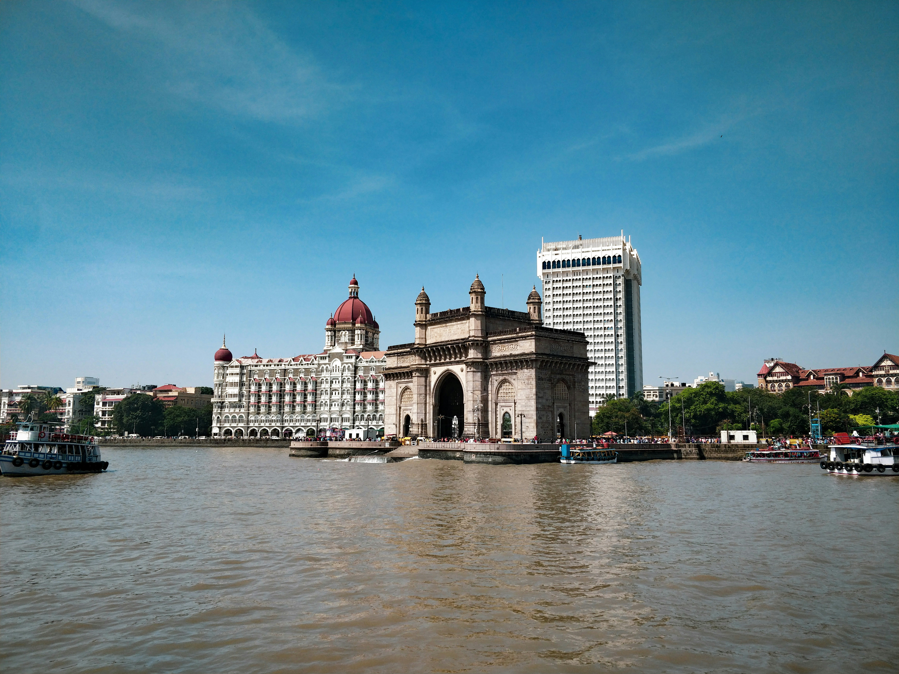
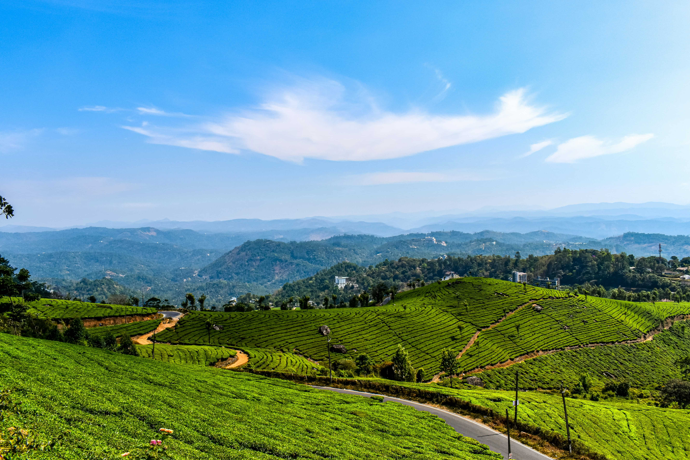
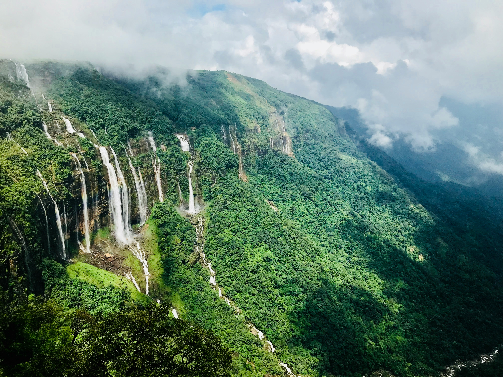

The Taj Mahal is one of India's most famous landmarks and a UNESCO World Heritage Site. Built by Mughal emperor Shah Jahan, it is renowned for its beautiful white marble architecture and is a symbol of love.
Learn More About the Taj Mahal
India Gate is a famous war memorial located in the heart of New Delhi. It was built in memory of Indian soldiers who died during World War I and is one of the city's most recognizable landmarks.

Learn More About the India Gate
The Gateway of India is a historic monument overlooking the Arabian Sea in Mumbai. Built during the British era, it is one of Mumbai's most popular tourist attractions.

Learn More About the Gateway of India
Munnar is a beautiful hill station in Kerala known for its green tea plantations, misty mountains, waterfalls, and pleasant climate. It is a popular destination for nature lovers and adventure seekers.

Learn More About Munnar- Kerala
Shillong, known as the "Scotland of the East," is a scenic hill station surrounded by green hills and beautiful waterfalls. Popular attractions include Shillong Peak, Elephant Falls, and Umiam Lake.
